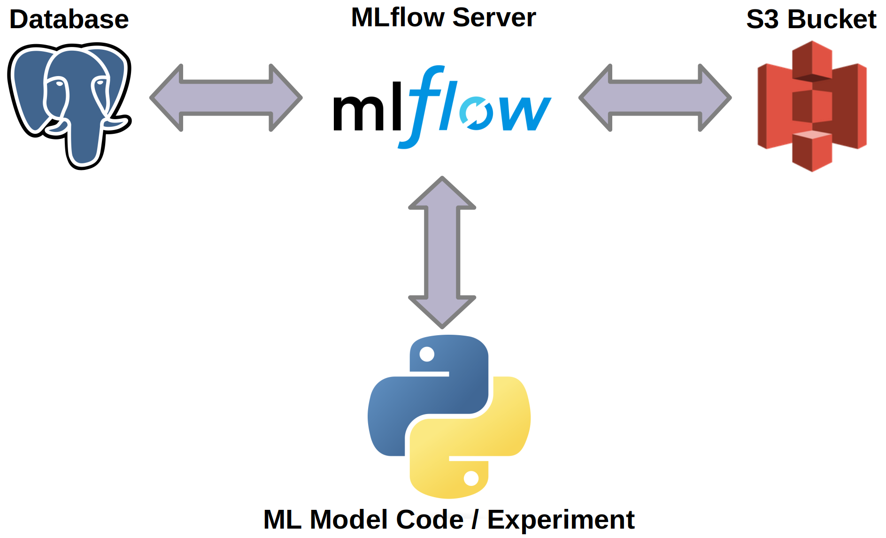

In the last class we saw how to use MLflow to track experiments.
Question 1
Answer!
In a mlruns folder created by MLflow.
Question 2
Answer!
We may have a problem, as one will not have vision of what was attempted by the other.
It would be appropriate to keep information about experiments centrally. Thus, whenever an experiment is carried out by a data scientist, the result will be available for analysis by others.
Question 3
Answer!
In a relational database!
Question 4
Answer!
S3 bucket!
New scenario!
Let's propose a reconfiguration of the scenario from last class. In it, all structured information about the experiments will be stored in a PostgreSQL database, while the artifacts will be stored in an S3 bucket.

Important!
Now the results of the experiments will be available to everyone on the team!
The MLFlow server could also run centrally (like on an EC2 instance). However, we will keep it running locally, but storing data centrally.
Create Database
Question 5
Create Bucket
Question 6
Configure MLflow Server
Now let's start a local MLflow server that will connect to the database and the S3 bucket.
Question 7
Use MLflow Server
Question 8
Let's configure the copy of the previous class project to connect to the server using the URL. Thus, MLflow will make requests to the REST API of the MLflow server that is running locally and, in turn, the server will store the experiment logs in PostgreSQL and AWS S3.